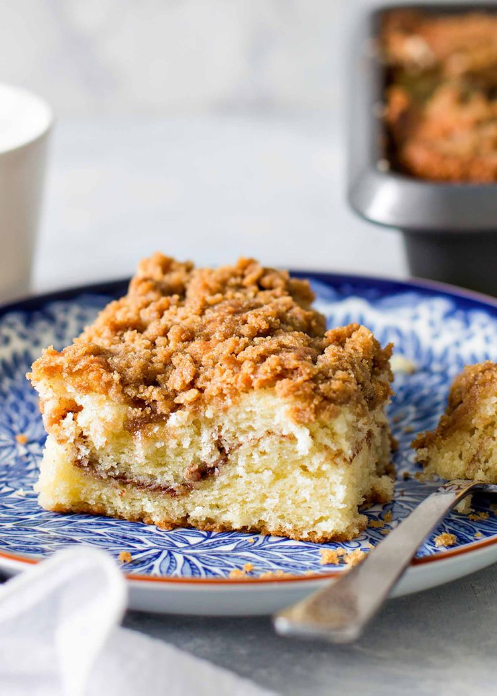

Coffee Cake

Description
The cake batter includes sour cream, which not only adds richness but also helps maintain a tender crumb.
There’s a cinnamon stripe through the center of the cake and a blanket of crumble over the top.
To ensure that distinctive stripe, we layer about half of the batter into the bottom of the pan, sprinkle the cinnamon layer over the top,
then the remaining batter, and finally, a thick cover of crumble topping.
Ingredients
For the coffee sponge
- 3 tbsp instant coffee powder - or coffee granules ground to a powder
- 200 g plain flour
- 2½ tsp baking powder
- 220 g soft light brown sugar
- 220 g margarine or butter - butter must be soft at room temperature
- 4 medium eggs
- 2 tsp milk
- ⅛ tsp salt
Steps
For the coffee sponge
- Pre-heat your oven to 160ºC/140ºC fan. Line two 20cm round sandwich tins with greaseproof paper or re-usable baking tin liners (I use these tins and these liners).
- Put all of the cake ingredients into a large bowl (3 tbsp coffee powder, 200g plain flour, 2½ tsp baking powder, 220g soft light brown sugar, 220g margarine or butter, 4 medium eggs, 2 tsp milk, ⅛ tsp salt). Beat with an electric mixer or by hand on a low speed until all of the ingredients are combined.
- Split the mixture between the two prepared tins. Then bake for 30-35 minutes until a skewer inserted in the centre comes out clean.
- Once the cakes are cooked, remove them from the oven. Leave them to cool in their tins for about 10 minutes before removing them from the tins and moving them to a wire rack to cool completely.
Home